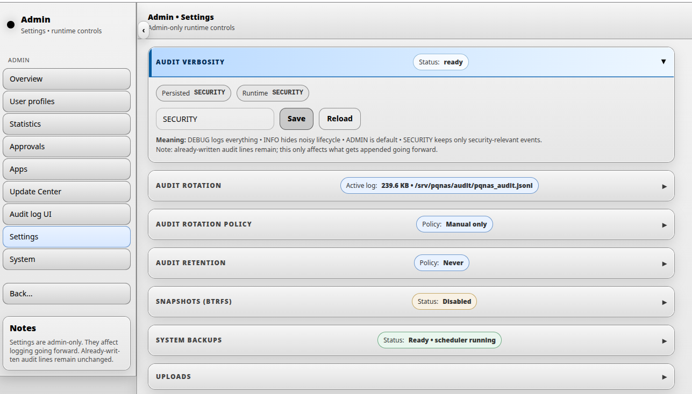
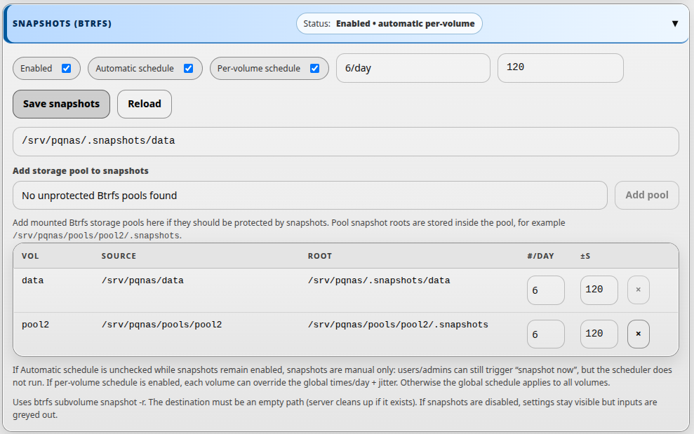
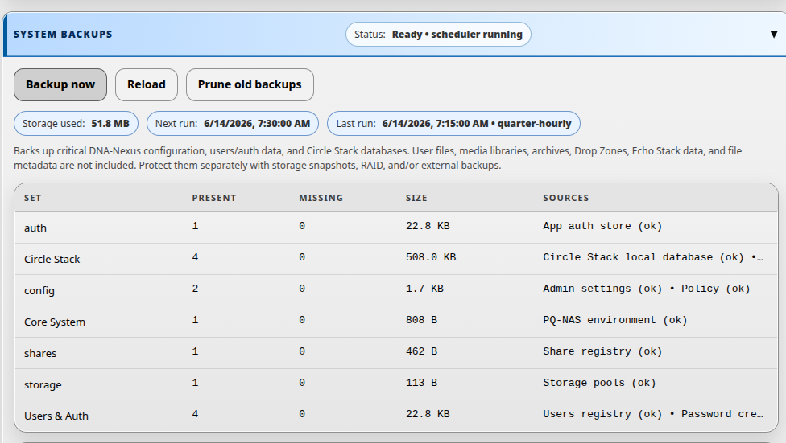

Server settings
Server settings control the basic behavior of the DNA-Nexus installation. After the first administrator login, review these settings before creating normal users or storing production data.
Initial administrator setup
When the first administrator opens DNA-Nexus for the first time, the workspace may still be empty. Before creating normal users or uploading content, open the Admin area and review the basic server settings.

Audit verbosity
The first setting an administrator should review is audit verbosity. This setting controls how detailed the audit log should be.
The audit log is used for later review of important system activity, such as login events, administration actions, user management changes and security-relevant server events. More verbose logging can be useful during testing or troubleshooting, but it can also create unnecessary noise in normal use.
Audit log rotation and retention
Audit log rotation controls when the active audit log is archived into a rotated audit log file. Audit log retention controls how long rotated audit log files are kept.
Rotation policy
DNA-Nexus supports several audit log rotation policies. Choose the policy that matches the expected amount of audit activity on the server.
| Rotation policy | Meaning | Typical use |
|---|---|---|
| Manual | The administrator rotates the audit log manually from the audit log rotation section. | Small demo systems or installations where the administrator wants full manual control. |
| Daily (UTC) | The active audit log is rotated once per day using UTC time. | Normal installations where daily audit archives are easier to review. |
| When active log exceeds N MB | The active audit log is rotated when it grows above the configured size, for example 256 MB. | Busy servers where log size matters more than calendar days. |
| Size or daily, whichever comes first | The audit log is rotated when either the configured size limit is reached or the daily UTC rotation time arrives. | Production systems where both predictable daily archives and size limits are useful. |
Retention policy
Audit log retention defines which rotated audit log archive files should be kept. This helps prevent old audit archives from using unlimited disk space.
| Retention policy | Meaning | Example |
|---|---|---|
| Do not delete automatically | DNA-Nexus keeps rotated audit log files until an administrator removes them manually. | Useful when an external backup or compliance process manages log retention. |
| Keep last N days | Rotated audit log files older than the configured number of days can be pruned. | Keep the last 90 days. |
| Keep last N rotated files | Only the newest configured number of rotated audit log files are kept. | Keep the last 30 rotated files. |
| Keep at most N MB total | Rotated audit log archives are pruned until the total archive size is below the configured limit. | Keep at most 1024 MB of rotated audit logs. |
Preview and run pruning
Use Preview prune before deleting rotated audit logs. The preview is a dry run: it lists the files that would be deleted and estimates how much disk space would be freed.
Use Run prune now only after reviewing the preview result. This performs the actual cleanup according to the selected retention policy.
Snapshots (Btrfs)
If the DNA-Nexus data storage uses Btrfs, the server can create automatic snapshots. Snapshots are point-in-time views of the data and can later be used for recovery through the Snapshot Manager app.

Snapshot settings
The administrator can enable or disable snapshots, choose whether snapshots are created automatically, and define how often snapshots should be taken.
| Setting | Meaning | Typical use |
|---|---|---|
| Enabled | Turns snapshot support on or off for the configured Btrfs snapshot path. | Enable this when the server should keep recoverable point-in-time copies. |
| Automatic schedule | Allows DNA-Nexus to create snapshots automatically according to the schedule. | Use this for normal installations where snapshots should be created without manual action. |
| Per-volume schedule | Allows each volume to override the global snapshot schedule. | Use this when some volumes need snapshots more or less often than others. |
| Times/day | Defines how many automatic snapshots should be taken per day. | For example, 1 snapshot per day for low-activity systems. |
| Jitter (s) | Adds a small randomized delay in seconds before scheduled snapshot jobs run. | Use jitter to avoid all snapshot jobs starting at exactly the same second. |
Manual snapshots
If automatic scheduling is disabled while snapshots remain enabled, snapshots are manual only. In that mode, users or administrators can still trigger snapshot creation, but the scheduler does not run automatically.
Snapshot Manager app
The settings page controls whether snapshots are enabled and how the automatic schedule works. Actual snapshot management is done in the separate Snapshot Manager app. From Snapshot Manager, administrators can review available snapshots and perform operations such as restoring data from a snapshot.
System Backups
System Backups protect the critical DNA-Nexus server configuration and internal system state. They are small backups created by the system backup worker.

What is included
System Backups include important server-side configuration and internal state, such as the DNA-Nexus environment file, admin settings, policy configuration, users/auth data, app auth data, share registry, storage pool configuration and Circle Stack databases.
Sensitive environment values are redacted before the environment file is copied into the backup archive.
Backup tiers
The scheduler creates several backup tiers. The backup list shows which tier each backup belongs to.
| Tier | When it runs | Default retention |
|---|---|---|
| quarter-hourly | Every 15 minutes | 24 hours |
| hourly | On the hour | 7 days |
| daily | At 03:00 | 30 days |
| weekly | Sunday at 03:00 | 12 weeks |
| manual | When an administrator clicks Backup now | Kept until an administrator removes it |
Controls
Use Backup now to create a manual system backup immediately. Use Reload to refresh the backup status and list. Use Prune old backups to remove scheduled backups that are older than the retention policy. Manual backups are not removed by automatic retention.
Status fields
- Storage used shows how much disk space the system backups currently use.
- Next run shows when the scheduler will run next.
- Last run shows the most recent scheduler result or error.
- Set shows each protected backup group.
- Present and Missing show whether expected sources were found.
- Sources lists the files or databases included in each group.
Recommended setting
For a normal installation, SECURITY is a good default audit verbosity level. It records important security and administration events without logging every possible detail.
If Btrfs is used for DNA-Nexus data storage, enable snapshots and use an automatic schedule unless the server has a separate backup or recovery policy that intentionally disables them.
Keep System Backups enabled for normal installations. They provide a lightweight recovery point for important DNA-Nexus configuration and internal system state.
Verify the setting
-
Open Admin settings
Open the Admin area from the left sidebar and go to the settings page.
-
Select audit verbosity
Find the audit verbosity setting and select the desired level. For most installations, choose SECURITY.
-
Save the setting
Save or apply the settings. The selected audit verbosity and audit log rotation policy will be used for future audit log entries.
-
Review the audit log later
After using the system, open the audit log page to confirm that important administration and security events are being recorded.